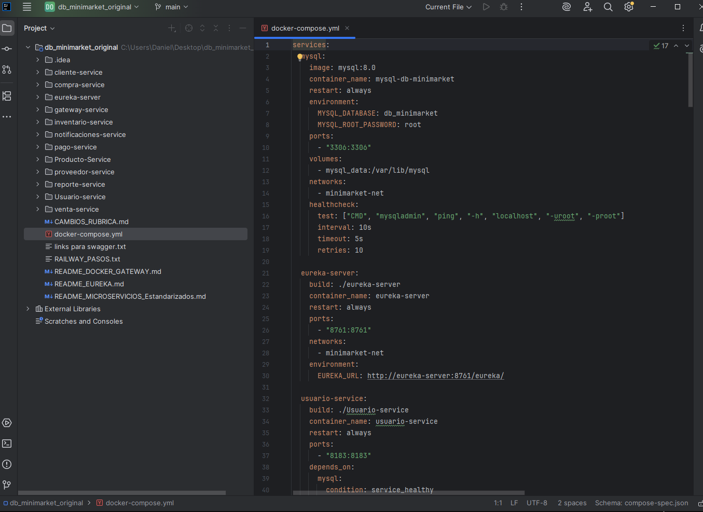
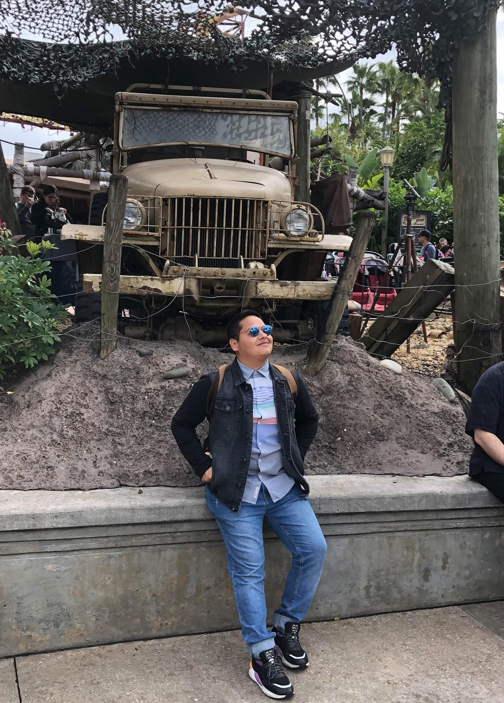
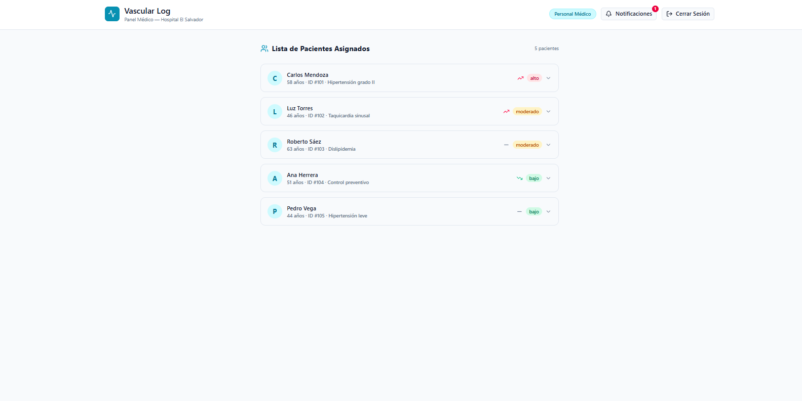

Sistema Minimarket
Descripción: Sistema desarrollado para gestionar productos, proveedores, clientes, inventario, ventas y pagos. Fue trabajado con Java, Spring Boot y MySQL, utilizando una arquitectura basada en microservicios.

Mi nombre es Daniel Pinto y estudio Ingeniería en Informática con mención
en Ingeniería de Datos.
Me considero una persona trabajadora, empática y respetuosa,
con interés en seguir aprendiendo y desarrollándome profesionalmente en el área tecnológica.

Ver mis proyectosActualmente estudio Ingeniería en Informática con mención en Ingeniería de Datos. Además, soy titulado como Técnico en Mecánica de Maquinaria Pesada en INACAP. Me interesa aprender sobre bases de datos, desarrollo de software . Mi objetivo profesional es seguir desarrollando mis conocimientos y trabajar en proyectos tecnológicos donde pueda aplicar soluciones basadas en datos.
SQL y bases de datos
Java Spring Boot
Kotlin
HTML y CSS
Descripción: Sistema desarrollado para gestionar productos, proveedores, clientes, inventario, ventas y pagos. Fue trabajado con Java, Spring Boot y MySQL, utilizando una arquitectura basada en microservicios.

Descripción: Sistema diseñado para apoyar la detección temprana y el seguimiento del riesgo cardiovascular de pacientes. Permite registrar información clínica, calcular el nivel de riesgo, generar alertas y visualizar datos relacionados con la salud del paciente.

Descripción: Página web desarrollada con HTML5, Bootstrap y CSS personalizado para presentar mi perfil profesional, habilidades, proyectos y datos de contacto. El sitio fue diseñado para adaptarse correctamente a diferentes tamaños de pantalla, como celular y computador.

Correo personal: mateo15q@hotmail.com
Correo institucional: da.pintos@duocuc.cl
Ciudad: Papudo, Región de Valparaíso
Disponibilidad laboral: Viña del Mar y Santiago
Teléfono: +56 965776025
Mi GitHub